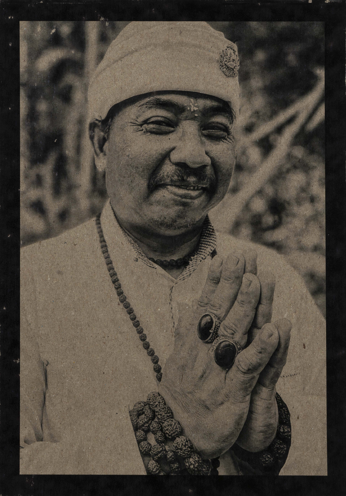

La belleza serena de lo sencillo.
Luz, emoción y memoria. Imágenes de carácter poético y atemporal, entre Barcelona y Bali.




“No fotografío lo extraordinario. Fotografío aquello que solemos pasar por alto.”
02
Lugares especiales
03